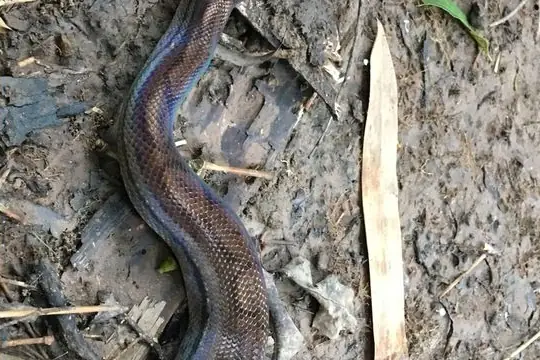
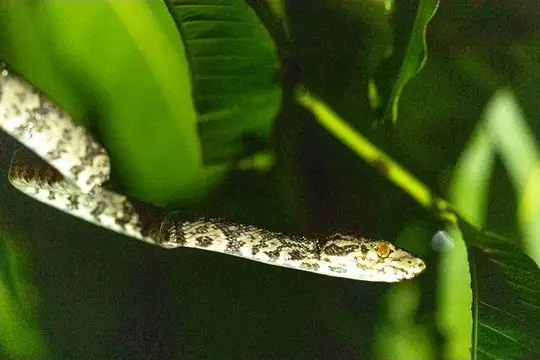
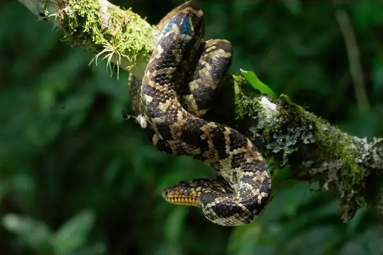
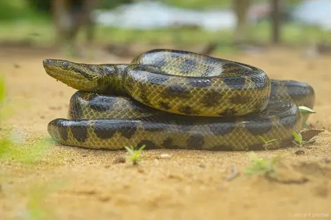
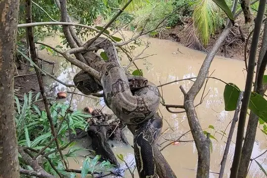

Boidae
The family Boidae (boas) has 67 living species in SnakeList (none venomous), in 15 genera, plus 50 fossil species listed separately.
- 67living species
- 67non-venomous
- 15genera
- 50fossil
About the family
Non-venomous snakes that kill their prey by constriction, from the giant anacondas to the small sand boas. Most boas live in tropical America and Madagascar; the Pacific boas live thousands of kilometres away from their American relatives.[1,2]
Almost all boas give birth to live young; only a few lay eggs. Many have heat-sensing pits between the lip scales, and they have small claw-like spurs beside the vent - the last traces of hind legs - which are usually larger in males.[1]
Sources for this introduction
- Boidae. Wikipedia.
- Boas (Boidae). Grzimek's Animal Life Encyclopedia, via Encyclopedia.com.
Information last reviewed 9 November 2026.
Species
Showing 67 species
 Amazon Tree BoaCorallus hortulana
Amazon Tree BoaCorallus hortulana Arabian Sand BoaEryx jayakari
Arabian Sand BoaEryx jayakari Argentinian Rainbow BoaEpicrates alvarezi
Argentinian Rainbow BoaEpicrates alvarezi Bates' Tree BoaCorallus batesii
Bates' Tree BoaCorallus batesii Beni AnacondaEunectes beniensis
Beni AnacondaEunectes beniensis Bibron's Pacific BoaCandoia bibroni
Bibron's Pacific BoaCandoia bibroni- No photo yetBiji Sand BoaEryx borrii
 Blomber’s Tree BoaCorallus blombergi
Blomber’s Tree BoaCorallus blombergi Boa ConstrictorBoa constrictor
Boa ConstrictorBoa constrictor Brown Rainbow BoaEpicrates maurus
Brown Rainbow BoaEpicrates maurus Calabar Ground PythonCalabaria reinhardtii
Calabar Ground PythonCalabaria reinhardtii
Campina Grande Rainbow BoaEpicrates assisi Central Asian Sand BoaEryx elegans
Central Asian Sand BoaEryx elegans- No photo yetChiapan BoaUngaliophis continentalis
 Colombian BoaBoa imperator
Colombian BoaBoa imperator- No photo yetConception Bank Silver BoaChilabothrus argentum

Cook's Tree BoaCorallus cookii
Cropani's BoaCorallus cropanii Cuban BoaChilabothrus angulifer
Cuban BoaChilabothrus angulifer
Dark Spotted AnacondaEunectes deschauenseei Dominica BoaBoa nebulosa
Dominica BoaBoa nebulosa DormilonaCorallus ruschenbergerii
DormilonaCorallus ruschenbergerii Dumeril's BoaAcrantophis dumerili
Dumeril's BoaAcrantophis dumerili Dwarf Sand BoaEryx miliaris
Dwarf Sand BoaEryx miliaris Eastern Rainbow BoaEpicrates crassus
Eastern Rainbow BoaEpicrates crassus Eastern Sand BoaEryx vittatus
Eastern Sand BoaEryx vittatus Emerald Tree BoaCorallus caninus
Emerald Tree BoaCorallus caninus Ford’s BoaChilabothrus fordii
Ford’s BoaChilabothrus fordii- No photo yetFowl SnakeChilabothrus schwartzi
 Green AnacondaEunectes murinus
Green AnacondaEunectes murinus Grenada Tree BoaCorallus grenadensis
Grenada Tree BoaCorallus grenadensis Haitian Boa (striatus)Chilabothrus striatus
Haitian Boa (striatus)Chilabothrus striatus Haitian Boa (strigilatus)Chilabothrus strigilatus
Haitian Boa (strigilatus)Chilabothrus strigilatus Hispaniola BoaChilabothrus gracilis
Hispaniola BoaChilabothrus gracilis- No photo yetHispaniolan Vine BoaChilabothrus ampelophis
 Jamaican BoaChilabothrus subflavus
Jamaican BoaChilabothrus subflavus Madagascar BoaAcrantophis madagascariensis
Madagascar BoaAcrantophis madagascariensis Mona BoaChilabothrus monensis
Mona BoaChilabothrus monensis Müller’s Sand BoaEryx muelleri
Müller’s Sand BoaEryx muelleri New Guinea Viper BoaCandoia aspera
New Guinea Viper BoaCandoia aspera Northern Bahamas BoaChilabothrus exsul
Northern Bahamas BoaChilabothrus exsul Northern Rubber BoaCharina bottae
Northern Rubber BoaCharina bottae Northern Three-lined BoaLichanura orcutti
Northern Three-lined BoaLichanura orcutti Nosy Komba BoaSanzinia volontany
Nosy Komba BoaSanzinia volontany Oaxacan Dwarf BoaExiliboa placata
Oaxacan Dwarf BoaExiliboa placata Pacific Boa (carinata)Candoia carinata
Pacific Boa (carinata)Candoia carinata Palau Bevel-nosed BoaCandoia superciliosa
Palau Bevel-nosed BoaCandoia superciliosa Panamanian Dwarf BoaUngaliophis panamensis
Panamanian Dwarf BoaUngaliophis panamensis Puerto Rican BoaChilabothrus inornatus
Puerto Rican BoaChilabothrus inornatus Rainbow BoaEpicrates cenchria
Rainbow BoaEpicrates cenchria Red Sand BoaEryx johnii
Red Sand BoaEryx johnii Ringed Tree BoaCorallus annulatus
Ringed Tree BoaCorallus annulatus Rosy BoaLichanura trivirgata
Rosy BoaLichanura trivirgata Rough-tailed Sand BoaEryx conicus
Rough-tailed Sand BoaEryx conicus Sand BoaEryx colubrinus
Sand BoaEryx colubrinus Sand Boa (jaculus)Eryx jaculus
Sand Boa (jaculus)Eryx jaculus SanziniaSanzinia madagascariensis
SanziniaSanzinia madagascariensis Sistan Sand BoaEryx sistanensis
Sistan Sand BoaEryx sistanensis Solomon Island Ground BoaCandoia paulsoni
Solomon Island Ground BoaCandoia paulsoni- No photo yetSomali Sand BoaEryx somalicus
 Southern Bahamas BoaChilabothrus chrysogaster
Southern Bahamas BoaChilabothrus chrysogaster Southern Rubber BoaCharina umbratica
Southern Rubber BoaCharina umbratica
Tet'chien BoaBoa orophias Virgin Islands BoaChilabothrus granti
Virgin Islands BoaChilabothrus granti Whitaker's BoaEryx whitakeri
Whitaker's BoaEryx whitakeri Yellow AnacondaEunectes notaeus
Yellow AnacondaEunectes notaeus- No photo yetAustraliasis amethystinus
No snakes in Boidae match.
Fossil species
These species are known only from fossils. They are not living species and are not counted in this page’s totals. The geological ages given are approximate: they come from the rock layers the fossils were found in, and the dating and classification of fossil snakes are revised as new material is studied.
- Titanoboa Titanoboa cerrejonensis (middle-late Paleocene, about 58 million years ago)
- Anilioides minuatos (fossil; age not recorded in SnakeList)
- Anilioides nebraskensis (fossil; age not recorded in SnakeList)
- Aphelophis talpivorus (fossil; age not recorded in SnakeList)
- Bavarioboa bachensis (fossil; age not recorded in SnakeList)
- Bavarioboa crocheti (late Oligocene, about 25 million years ago)
- Bavarioboa hermi (fossil; age not recorded in SnakeList)
- Bavarioboa herrlingensis (fossil; age not recorded in SnakeList)
- Bavarioboa minuta (late Oligocene, about 25 million years ago)
- Bavarioboa ultima (late early Miocene, about 15 million years ago)
- Bavarioboa vaylatsae (fossil; age not recorded in SnakeList)
- Boa blanchardensis (late Pleistocene, about 12,000 years ago)
- Boavus idelmani (early Eocene, about 52 million years ago)
- Bransateryx vireti (fossil; age not recorded in SnakeList)
- Cadurceryx filholi (fossil; age not recorded in SnakeList)
- Cadurceryx pearchi (late Eocene, about 37 million years ago)
- Cheilophis huerfanoensis (fossil; age not recorded in SnakeList)
- Chubutophis grandis (early Eocene, about 48 million years ago)
- Corallus priscus (late Paleocene-early Eocene, about 53 million years ago)
- Eoconstrictor fischeri (middle Eocene, about 47 million years ago)
- Eryx primitivus (early Pliocene, about 4 million years ago)
- Eunectes stirtoni (middle Miocene, about 12 million years ago)
- Geringophis depressus (fossil; age not recorded in SnakeList)
- Geringophis robustus (early Oligocene, about 30 million years ago)
- Geringophis vetus (fossil; age not recorded in SnakeList)
- Geringophis yatkolai (fossil; age not recorded in SnakeList)
- Hechtophis austrinus (Paleocene, about 58 million years ago)
- Hordleophis balconae (late Eocene, about 37 million years ago)
- Lithophis sargenti (fossil; age not recorded in SnakeList)
- Messelophis ermannorum (middle Eocene, about 47 million years ago)
- Messelophis variatus (middle Eocene, about 47 million years ago)
- Neurodromicus dorsalis (fossil; age not recorded in SnakeList)
- Ogmophus arenarum (fossil; age not recorded in SnakeList)
- Paleryx cayluxi (fossil; age not recorded in SnakeList)
- Paleryx depressus (late Eocene, about 37 million years ago)
- Paleryx rhombifer (fossil; age not recorded in SnakeList)
- Paraungaliophis pricei (middle-late Paleocene, about 57 million years ago)
- Patagoniophis australiensis (early Eocene, about 55 million years ago)
- Patagoniophis parvus (Late Cretaceous, about 70 million years ago)
- Plesiotortrix edwardsi (fossil; age not recorded in SnakeList)
- Rionegrophis madtsoioides (Late Cretaceous, about 70 million years ago)
- Rukwanyoka holmani (late Oligocene, about 25 million years ago)
- Sanjuanophis froehlichi (early Eocene, about 52 million years ago)
- Tallahattaophis dunni (middle Eocene, about 46 million years ago)
- Totlandophis americanus (early Oligocene, about 30 million years ago)
- Totlandophis thomasae (late Eocene, about 37 million years ago)
- Tregophis brevirachis (fossil; age not recorded in SnakeList)
- Waincophis australis (fossil; age not recorded in SnakeList)
- Waincophis cameratus (middle Paleocene, about 58 million years ago)
- Waincophis pressulus (late Paleocene-early Eocene, about 53 million years ago)
About the family Boidae
- Distribution: living species recorded in 108 countries (+7 territories), on 6 continents: Africa, Asia, Europe, North America, Oceania, South America.
- Genera: Chilabothrus 14, Eryx 13, Corallus 9, Candoia 5, Epicrates 5, Boa 4, Eunectes 4, Acrantophis 2, Charina 2, Lichanura 2, Sanzinia 2, Ungaliophis 2, Australiasis 1, Calabaria 1, Exiliboa 1.